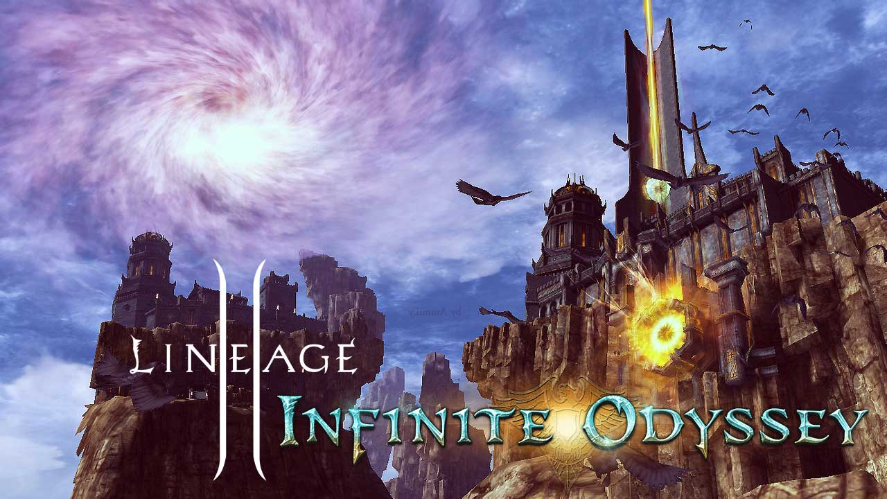
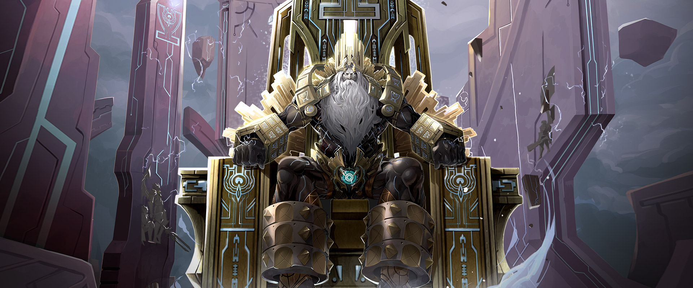
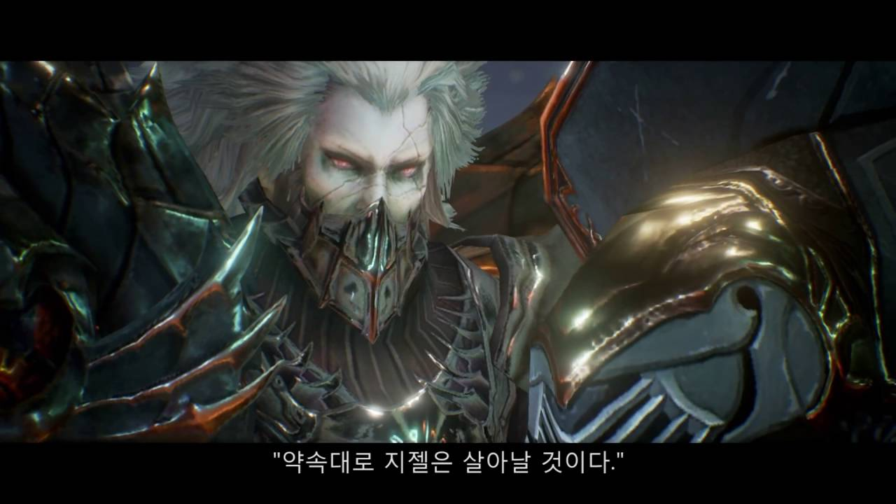
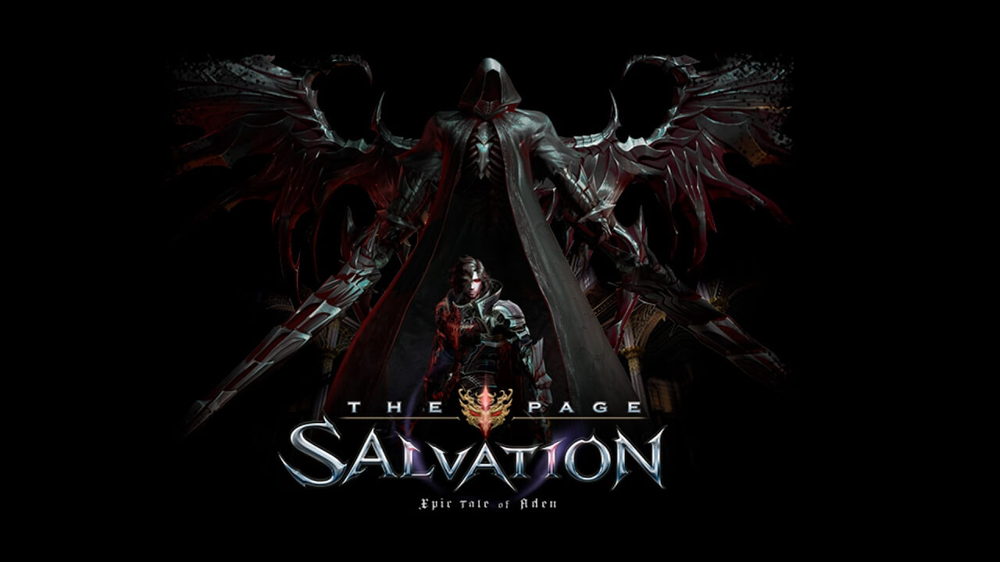
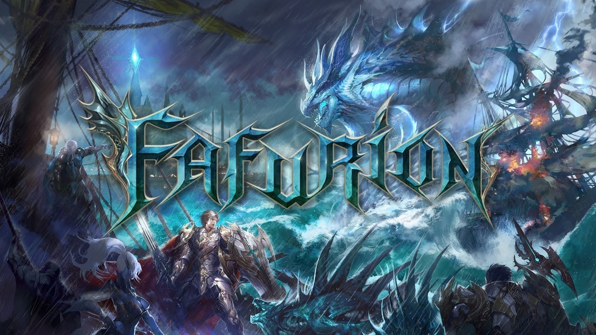

Epic Tale of Aden: Dimensional Strangers — Ertheia
Новая раса – Артея, новые параметры и татуировки УДЧ (LUC) и ХАР (CHA), алхимия, система мирового
чата, измененные и новые зоны охоты, предметы, квесты, изменения в интерфейсе и многое другое.
Использовав, можно отобразить весь мировой чат. Включить и отключить мировой чат можно в окне сообщений.
Добавлены 2 новых умения откровения. Изменены некоторые умения классов перерождения.
Стартовая деревня и зона охоты для расы Артея. Изменен ряд старых зон охоты.
Улучшен интерфейс квестов: изменены трехмерные стрелки; если игрок находится в городе, а квест нужно
сдавать в другом городе, то стрелка покажет на гейткипера; список телепортов гейткипера зависит от
квестов: нужные квестовые зоны автоматически перемещаются в верхнюю часть списка; изменена иконка квестов
увеличен размер иконки и она выглядит как мешочек, цвет мешочка зависит от типа квеста
На cерверы в июне 2014 было установлено новое обновление цикла Epic Tales of Aden -
Lineage 2 Epic Tales of Aden: Episode 02 – Infinite Odyssey: The Beginning of Journey. Episode 02
был разделен на две части.
В первой части обновления вас ждут: отмена максимального уровня игрока, система Честь Дворянина,
межсерверный рейд и многое другое. Учтите, что название новых умений, предметов, квестов и зон охоты, скорее
всего, будут изменены. Добавлены новые умения на 100 уровне развития персонажа

Epic Tale of Aden: Infinite Odyssey — Hymn of the Soul
01.04.2015 на серверы было установлено новое обновление цикла Infinite Odyssey –
HymnofSoul. В нем подверглись серьезной переработке Кристаллы Души, добавлены 3 временные зоны
и Заклинатели Иса получили новые умения. Cистема Особых Свойств подверглась переработке:
добавлено 6 новых Кристаллов души, дарующих особые свойства оружию,
в оружие можно вставить 3 разных кристалла души у кузнецов в городах,
первый и второй кристалл души можно получить при убийстве рейдовых боссов,
третий кристалл души можно получить при прохождении временной зоны Мистическая Таверна,
кристаллы души имеют 5 степеней апгрейда, уровень кристалла повышается путем синтеза.
Доступно удаление кристалла души из оружия и замена его на другой
Парным мечам ранга S80 можно установить кристаллы души путем улучшения до +4
Изменено название опции особых свойств
Существующие кристаллы души помещены в специальные коробки с ваучерами на получение новых кристаллов души
- кузнецы в деревнях осуществляют обмен ваучеров на новые кристаллы души
Предметы для смены особого свойства кристалла души выведены из оборота и более не применяются для установки особых
свойств в оружие

Epic Tale of Aden: Helios, Lord of Bifrost
Император Хелиос, повелитель небес
и земли, появился на своем воздушном корабле-крепости Гиперион над просторами Адена и Эльмора…
16.09.2015 на основные сервера было установлено новое обновление из уже 3 эпизода саги:
Lineage II Epic Tales of Aden Episode 03: Helios, Lord of Bifrost.

Epic Tale of Aden: Grand Crusade
В обновлении предстоит сражение с активизировавшимися силами Эмбрио во главе с Кайном Ван Холтером и
Камиль на территории Грации. В обновление вошло: развитие персонажа возможно до 110 уровня; переделана
система способностей; добавлена новая фракция – Гильдия Охотников для игроков 85 уровня и выше; добавлен
новый фракционный сервис – Бестиарий; добавлено новое серверное событие Оборона Базы Альянса Кецеруса;
добавлены новые временные зоны в Твердыни Мессии; изменены зоны Алтарь Шилен, Пространственный Барьер,
Волшебная Долина; добавлена новая история в Таинственную Таверну – Выбор Кайна; произведена
реорганизация классов Разбойников Одала и Волшебников Фео; добавлены новые предметы и квесты;
изменен интерфейс игровой карты и связанного с ней функционала и многое другое.

Epic Tale of Aden: Salvation
В ноябре 2017 года на русских серверах Lineage 2 состоялся релиз очередного обновления:
Lineage 2: Epic Tales of Aden Episode 05: Salvation
Эпическое сказание, длившееся в течение более чем 10 лет, история Семи Печатей, теперь открывает свою
последнюю главу - «Salvation». По сюжету, искателям приключений предстоит отправиться в рейды на
мировых боссов Этиса Ван Этина и Кайна Ван Холтера. Кроме того, в игру добавили еще одну зону охоты –
«Тень древа жизни», а также серьезно упростили систему управления кланами. Вдобавок для гильдий появилась
специальная временная зона «Трон героев», где можно заработать немало очков репутации. Но самым главным
изменением стал первый шаг на пути к полной переработке классов, заявленной разработчиками. Первыми, кого
это коснулось, стали Заклинатель Иса и Рыцарь Сигиля.

Epic Tale of Aden: Fafurion
Fafurion: Пришествие 4го дракона. Не так давно на Корее было установлено новое обновление знаменитой
Lineage II Epic Tales of Aden: Fafurion. И так что же из себя представляет наш с вами сегодняшний герой
легенды о котором по сей день ходят среди жителей Эльморедена. Армией дракон воды Фафуриону служили полчища
големов, которые дракон направлял на поселения невинных людей. После нападения на королевство Евы и
поражения Фафурион был заточен в пещере. Войти в рейдовую зону Дракона Воды Фафуриона может командный
канал из 2-200 человек 105 уровня и выше. Дракон будет появляться на сервере каждые 6 дней.
Войти в зону возможно будет через NPC. Особенности рейда "Cердце Цунами": Добавлены различные виды бижутерии
драконов и оружия..
Lineage 2 Essence — новая версия проекта, вышедшая весной этого года. Здесь есть привычные олдскульные
декорации, музыка, расы и классы. Но теперь это всё предназначено для тех, кто не может проводить в игре
любую свободную минуту.Новый класс Всадник Авангарда олицетворяет силу и мощь. Только самые отважные мужчины
орочьего племени могут оседлать диких волков и львов. Всадник и его зверь — одно целое. Врывайся в бой и
используй своего питомца на максимум: терзай когтями, пугай чудовищным рычанием и стань ночным кошмаром
твоих врагов. Новые умения знакомых классов. Рыцари и разбойники подверглись переработке и готовы по-новому
раскрыть свой потенциал. Мастера щита получили мощные защитные умения, а адепты скрытных атак стали еще более смертоносными. Скучать точно не придется!